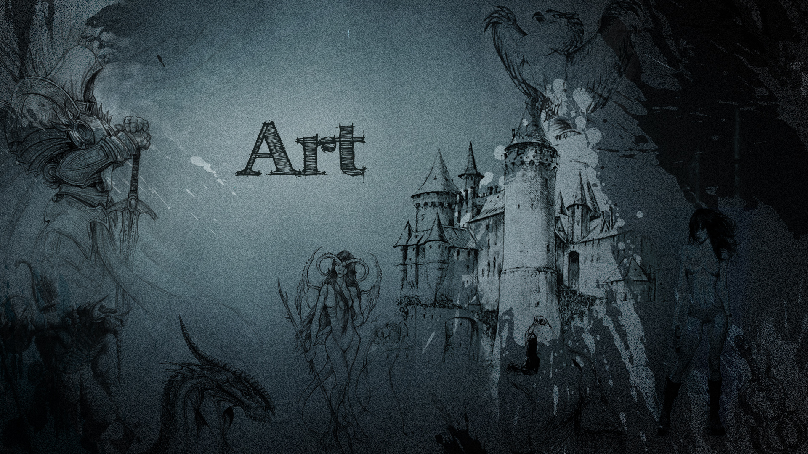
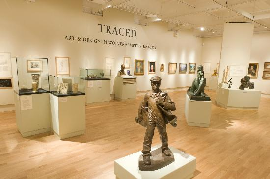

Elevii grupei 31-CA :
Bodean Denis
Ciobanu Ioana
Samoelvoa Tatiana
Ciorapu Ion
profesor : Nitza Ion
.jpg)
picturi artistice
expozitie privata
.jpg)
Definitia ti evaluarea artei a devenit problematica mai ales de la inceputul secolului 20. Richard Wollheim face distinctie intre trei moduri de acces: realist, unde calitatea estetica este o valoare independenta de orice punct de vedere uman; obiectivist, unde calitatea estetica este deasemeni o valoare absoluta, dar dependenta de experienta umana generala; ti pozitia relativista, in care calitatea estetica nu este o valoare absoluta, dar depinde de, ti variaza cu experienta umana a diferitilor indivizi. Un obiect poate fi caracterizat in functie de intentie, sau lipsa acesteia, a creatorului sau, indiferent de scopul sau functiunea lui. De exemplu o ceatca, care poate folosita ca un simplu recipient, poate fi considerat obiect de arta, daca e intentionata obiect estetic. Deasemeni, o pictura poate fi considerata obiect de meteug (deci nu obiect de arta), daca este un produs de masa.
